Space Transform
Overview
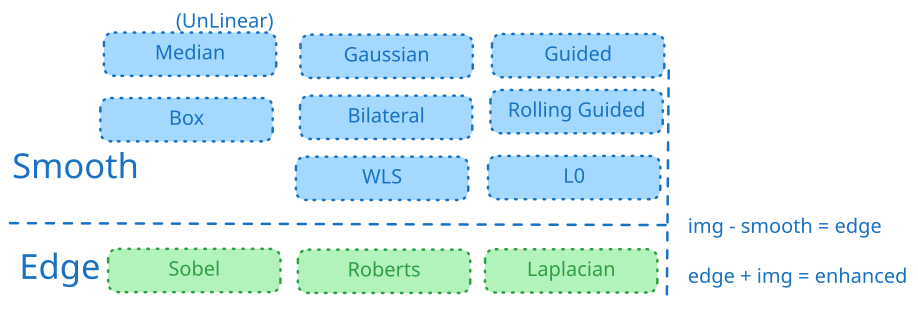
卷积
一维卷积：反转，相乘相加。假设有两个一维连续信号进行卷积，公式如下。
二维卷积其实是“相关”，因为缺少了反转的这一步骤，但是由于卷积核大部分都是对称的，所以可以忽略这一条件。所以图像卷积就是对应位置相乘相加！图片的卷积公式如下。
降噪/平滑
Median
中值滤波是一种基于统计的非线性滤波，它是椒盐噪声的“特效药”。代码
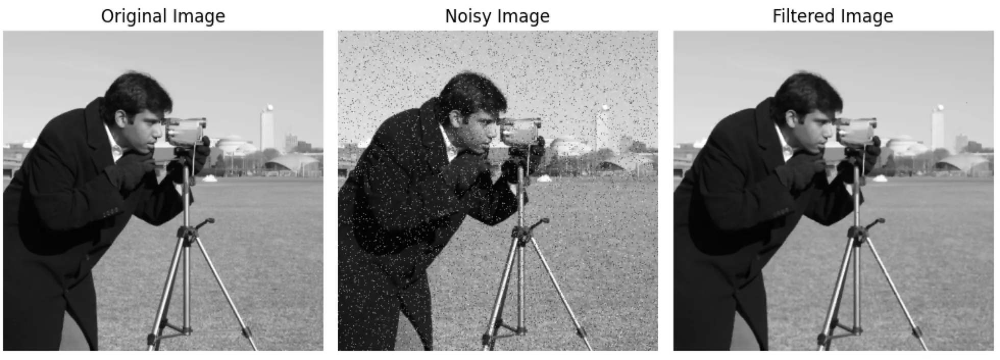
Box / Average / Local Mean
均值滤波器（盒式滤波器），就是某个“方块”内的像素求均值。代码
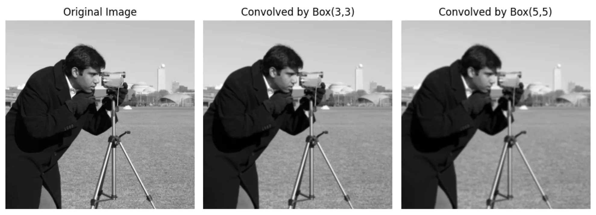
Percentile Mean
百分数均值滤波。计算局部区域内排在指定百分位数范围内的像素值的均值，对图像中的离群值更具鲁棒性。而普通的均值滤波则简单地计算局部区域内所有像素值的平均值，对所有像素值一视同仁，可能对包含离群值的图像较为敏感。代码
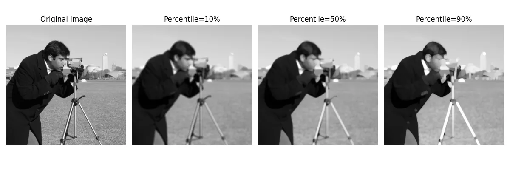
Gaussian
Box 还是太平均了，边缘损失严重，为了提升“保边”效果，进行高斯加权。代码
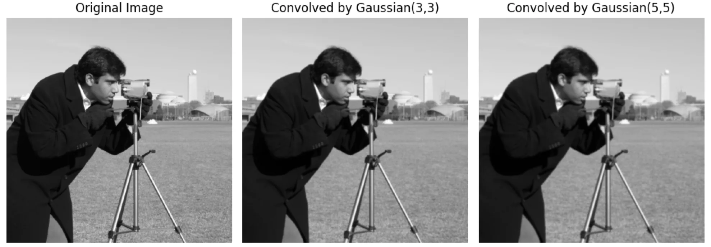
Bilateral
双边滤波是一种非线性、边缘保持的平滑滤波器。它结合了空间邻近度和像素值相似度两个权重，在平滑图像的同时能有效保留边缘。详细介绍：bilateral
- 传统高斯滤波只考虑空间距离：离中心越近的像素权重越大。
- 双边滤波在此基础上增加了像素值相似度：与中心像素值越相似的像素权重越大。
对于像素位置 $(x, y)$，双边滤波的输出为：
其中：
1. 空间权重（高斯核）：
$$
w_s(i, j) = \exp\left(-\frac{i^2 + j^2}{2\sigma_s^2}\right)
$$
2. 值域权重（基于像素强度差异）：
$$
w_r(i, j) = \exp\left(-\frac{|I(x+i, y+j) - I(x, y)|^2}{2\sigma_r^2}\right)
$$
3. 归一化因子：
$$
W_p = \sum_{i=-a}^{a} \sum_{j=-b}^{b} w_s(i, j) \cdot w_r(i, j)
$$
Weighted Least Squares
（2008 ACM TOG）WLS将图像分解为基底层（大尺度强度变化）和细节层（小尺度细节），进而提出了一种基于加权最小二乘法（Weighted Least Squares, WLS）的新方法。wls
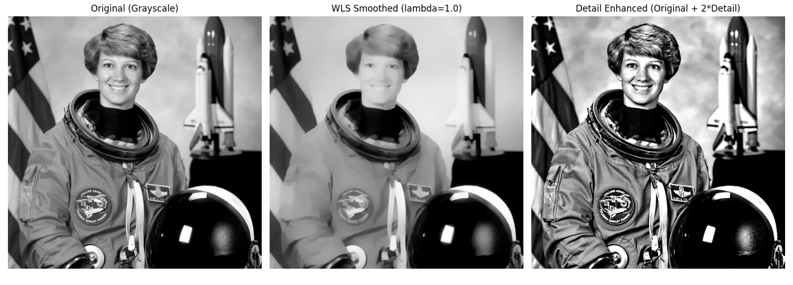
Guided Filter
（2009 CVPR）引导滤波（Guided Filter）的核心思想是利用一张引导图（Guidance Image）来指导对输入图像的滤波过程。它假设输出图像在局部窗口内是引导图的线性变换，从而在平滑噪声的同时，能更好地保持引导图所提供的边缘结构。guided-filter
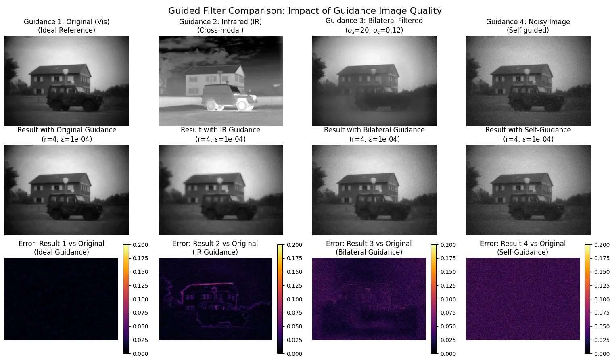
L0-minimization
（2011 SIGGRAPH Asia）通过增加过渡的陡峭程度来锐化主要边缘。该框架利用 L0 梯度最小化，以结构-稀疏性管理的方式全局控制产生多少非零梯度来近似显著结构。与其他边缘保留平滑方法不同，我们的方法不依赖于局部特征，而是全局定位重要边缘。l0
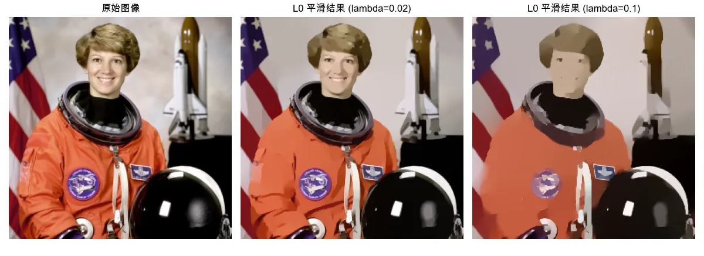
Rolling Guidance Filter
（2014 ECCV）第一步中按照对图像结构的尺度的定义，我们使用合适强度的高斯滤波器将小尺度的边缘完全抹平。此时图像的大尺度边缘也会被平滑。因此在第二步中需要恢复大尺度的边缘结构。然后以上两步进行迭代。rolling-guidance-filter
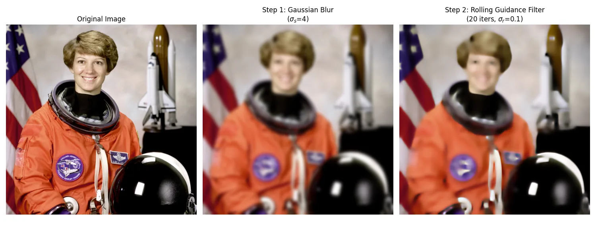
边缘/锐化
Roberts
2x2大小的求边缘。代码
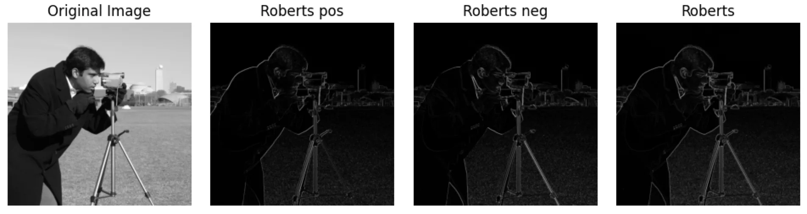
Sobel
3x3 大小的边缘。代码
.png)
Laplacian
Sobel 和 Robert 把 3x3 或者 2x2 的区域当成一个大像素，算这个像素内部的梯度。Laplacian 换了一个角度，找一个 3x3 的区域，算这个区域中心往外的梯度。另外，实践中，尝尝采用中心权重为正的形式，虽然按照梯度公式中心应该是负。Laplacian 核是离散拉普拉斯算子的近似：
对于 3×3 核，这对应四邻域形式。八邻域形式额外加上了对角线方向的贡献。
1. 四邻域 Laplacian（不考虑对角线）
- 八邻域 Laplacian（考虑对角线）
另外，可以把边缘加到原图上得到锐化图像。代码
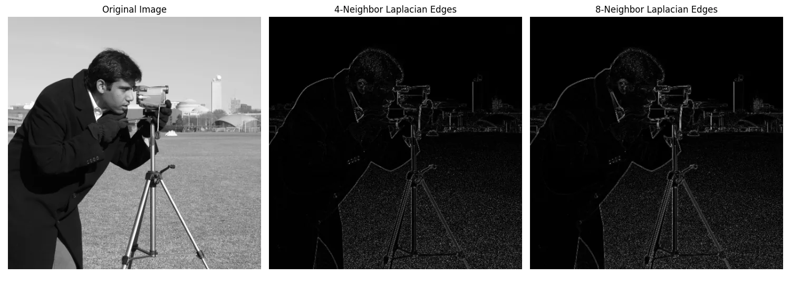
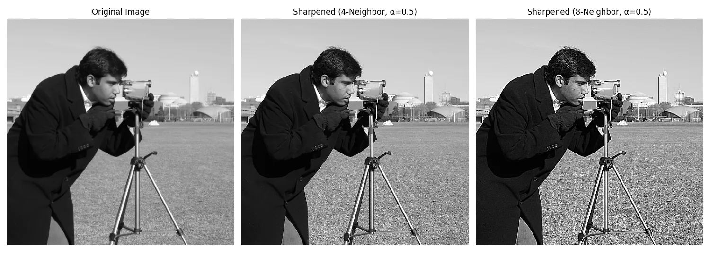
Reference
- 岳亚伟，薛晓琴，等. 数字图像处理与 Python 实现（第2版）[M]. 北京：人民邮电出版社，2024.